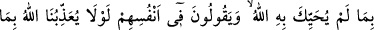
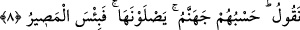

Açık ve gizli her ikisi de senin ilmin için aynıdır,
Ne bunu daha çabuk görürsün, ne de onu daha geç bilirsin.
Cenab-ı Hakk’ın her şeyi bildiğini, kendisini her şeyde murâkabe edip gözettiğini ve
her şeyde O’nun ilminin yettiğini bilen kimse her şeyde O’na bir güven içinde olur ve
bütün varlığı ile O’na yönelir.
İbn Atâullah şöyle der: İnsanların sana iyilikle yönelmediklerini veya sana kötülük
ettiklerini bildiğin zaman, Allah Teâlâ’nın senin hakkındaki bilgisine dön. Şâyet O’nun
sana âid bütün hallerini bilmesi sana kanâat vermiyor, seni tatmin etmiyorsa işte bu
kanâatsizlik musîbeti, insanlardan uğrayacağın musibetten çok daha şiddetli ve
büyüktür.
Cenab-ı Hakk’ın ilim ismiyle ahlâklanmak, ilmi elde edip ona ihtiyacı olanlara
öğretmekle olur. Yâ Allâme’l-ğuyûb ismi celilinin zikrini, bundan dolayı kendisinde
değişik bir hal meydana gelinceye dek devam ederse bilinmeyenleri konuşmaya başlar,
kalplerdeki gizlileri görür ve ruhu yüce âlemde en yüksek yere terakkî eder ve kâinâtın
işlerini ve olayları hakkında söz söyler.
Fıkıh âlimleri şöyle demişlerdir: “Allah Teâlâ ilim sıfatıyla değil zâtiyle bilendir,
kudret sıfatıyla değil zâtiyle kadirdir” diyen, yâni mûtezile ve cehmiye gibi Cenab-ı
Hakk’ın zâtiyle kaim sıfatlarını inkâr eden kimsenin küfrüne hükmedilir. Çünkü ilâhi
sıfatları inkâr etmek küfürdür.
Rahâvî, Allah’ın birliğini ikrar ve kabul edip de inkârcı felâsife ve mutezile gibi
sıfatlarını inkâr ederse o kişinin îmânı muteber ve makbul değildir, demiştir. Ancak
burada mutezileye göre önemli bir husus vardır. Çünkü Mutezile kıble ehlindendir. Bu
sebeple Akâid şerhi’nde, “kıble ehlinden olan kâfir sayılamaz” diyen âlimlerin görüşü
ile: “Kur’an’ın mahluk olduğunu söyleyen, âhirette Cenab-ı Hakkın görülmesini
mümkün görmeyen ve Ebû Bekr ile Ömer’e küfreden kimse kâfir sayılır” diyen
âlimlerin görüşlerini bir araya getirmek müşkildir, fevkalade zordur.
8. Gizli konuşmaktan menedildikten sonra yine o yasaklananı yapmaya
kalkışarak günah, düşmanlık ve Peygamber’e karşı gelmek hususunda gizlice
konuşanları görmedin mi? Onlar sana geldikleri zaman seni, Allah’ın selamlamadığı
bir şekilde selamlıyorlar. Kendi içlerinden de: Bu söylediklerimiz yüzünden Allah’ın
bize azap etmesi gerekmez miydi? derler. Cehennem onlara yeter. Oraya